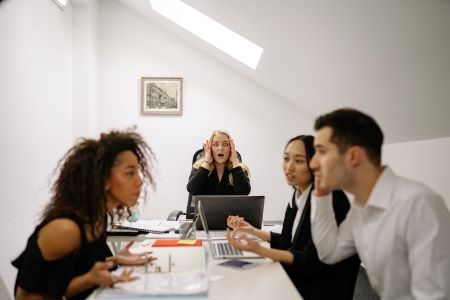

Feedback received
After my portfolio submission, this was the feedback received:
"Always present and active in all the group activities.
Very nice reflection on the work done so far.
Given the group dynamics,would be nice to reflect also on your efforts to bridge the gaps in the group."

Reflection on our teamwork
Although the conflict in our group has been silently forgotten about, it is very hard to work with our group. There is a separation between the friend group in the team and the rest of us, which causes a big lack of written communication and delays in our work, as tasks are only distributed when certain members are present, despite our protest against it.
Members in our team come hours later then they announce they will, which means some of us are waiting for them for the bigger part of the day.
Another problem we have is a member who is taking everything personally and is not behaving profesionally. She has been using aggressive language (curse words), has openly expressed feelings of homophobia and tried to convince us of her religious beliefs, and who has also been refusing to give more complex tasks to a part of the group, based on her "feeling" that we would be unable to do it.
There have been instances where the said member has not been doing her part of the work on time which influenced how late work done by other members has been done.
Despite all of these dificulties, our team is alltogether trying to behave professionally when it comes to putting in the required work. Direct aggressions against Artun have stopped. There currently is nothing to mediate as all of us are aware that our most important goal is not being friends with each other, but finishing the project on time and making sure we do it well. This is something I appreciate in my team a lot and cannot complain about at all.